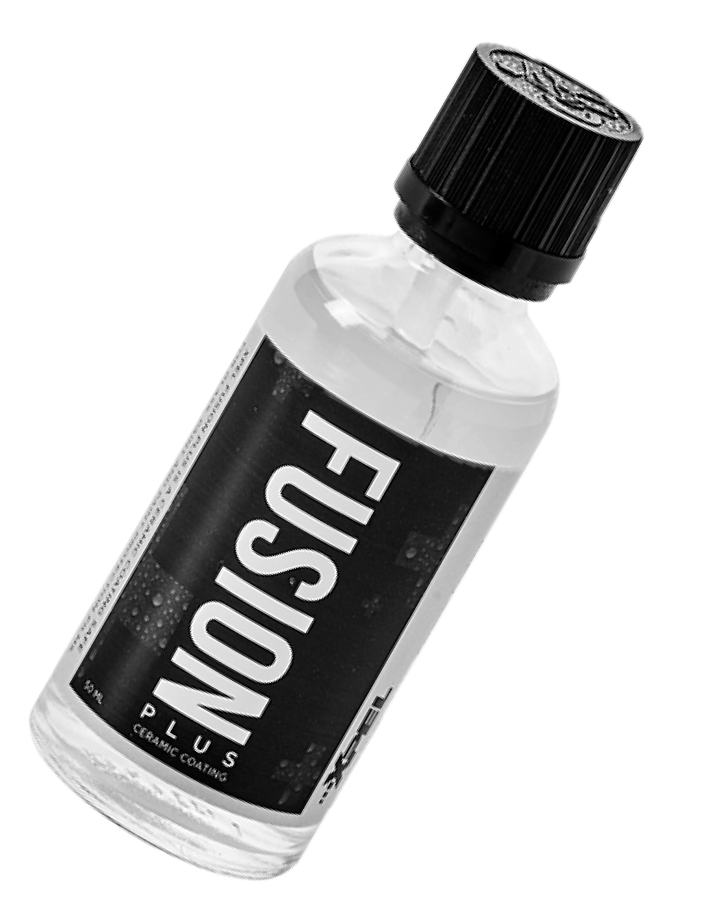

керамическое покрытие
Защитите автомобиль от царапин, сколов, грязи и химических реагентов с помощью керамики с гарантией 1 год.
Керамическое покрытие от 28 000₽.
Защитите автомобиль от царапин, сколов, грязи и химических реагентов с помощью керамики с гарантией 1 год.
Керамическое покрытие от 28 000₽.
Керамическое покрытие — это полимер, который вступает в реакцию с ЛКП автомобиля и создает на нем прозрачную защитную пленку

ДЛИНА: 3,6 — 3,9 м
ШИРИНА: 1,5 — 1,7 м

ДЛИНА: 3,9 — 4,4 м
ШИРИНА: 1,6 — 1,75 м

ДЛИНА: 4,4 — 4,8 м
ШИРИНА: 1,7 — 1,8 м

ДЛИНА: > 4,8 м
ШИРИНА: > 1,8 м

ДЛИНА: > 5 м
ШИРИНА: > 1,8 м

Более 20.000 довольных клиентов за 8 лет работы

Территория охраняется 24/7, вход в боксы по специальным ключам

Официальная гарантия 1 год на все работы

Чистые и отапливаемые боксы с оборудованием

Проверенные временем и климатом материалы

Сервис в самом центре Петербурга
* Если заявка пришла после 9 вечера — перезвоним в 10 утра на следующий день